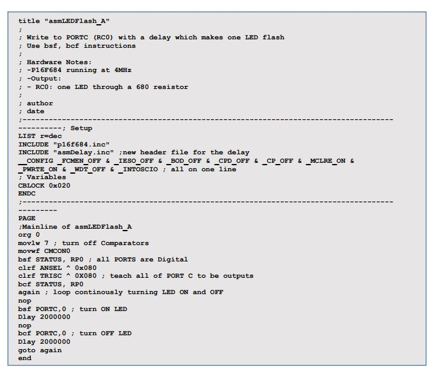
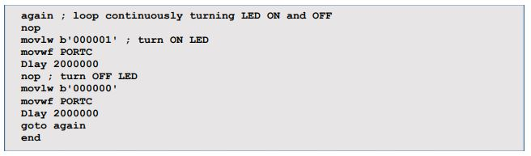

Use basic assembly language instructions (movlw, movwf, clrf, goto):
To program PORTS so the LED will turn on and off, repeatedly
Simulate code using MPLAB SIM before flashing code to PIC
Adding the Stopwatch window and breakpoints to verify the timing of a delay
Program your PIC using the PICKit3
Procedure:
Create new project:
Create a new project and workspace called asmLED_Flash in a folder with the same
name
Open asmTemplate.asm from the Tutorial #1 and re-save it as asmLEDFlash_A.asm.
Add the file to the project's source code
The Delay header file:
After the INCLUDE “p16f684.inc” add: INCLUDE "asmDelay.inc" on the next line.
Locate and open the file. This file contains code that allows the programmer to
specify a delay in microseconds. For example - Delay 1500000 – represents 1.5
seconds.
To allow us to use it in multiple programs, we need to save it with the other header
files in the following path: C:\Program Files\Microchip\MPASM Suite.
If this is not possible for you, save it in the asmLED_Flash folder and add it to
HEADER within the MPLAB program.
Close the file after you've saved it in the new location.
Modify Code:
Modify the code to match what is shown on asmLEDFlash_A.asm on the next page.
Build all (Ctrl + F10) and rearrange the windows as shown below.
Configuring SFRs:
Before we can begin to use the PIC to send out digital 1s and 0s, we need to first configure
some of the SFRs (Special Function Registers).
Turn off comparators
Switch all ports from analog to digital
Teach each ports to be inputs and/or outputs
CMCON0:
This code is simply disabling the internal comparators so that it doesn’t interfere
with your program.
ANSEL:
This SFR is in Bank 1. Therefore, to access it, you must move to Bank 1 (set RP0
(bit 5) in your STATUS Register). This is called BANK SWITCHING.
This PIC has 8 analog channels which share with the digital ports. The problem is,
the PIC defaults to analog. Thus, you must specify that you’re using digital from
the start. Hence, the code.
TRISC:
All 12 ports in the P16F684 are bi-directional (with the exception of RA3 which can
never be an output)
To teach a port to be an input, you set (1) that bit in the TRIS reg
To teach a port to be an output, you clear (0) that bit in the TRIS reg
In our example, by clearing the TRISC reg, you’re making all the ports in PORTC
(RC0:RC5) outputs.
STATUS:
We must return to Bank 0 so that we can write to PORTC. To accomplish this we
clear (0) RP0. This is called BANK SWITCHING!
Setup MPLAB SIM
Open MPLAB SIM
Open the Watch window. Move it to the bottom right-hand corner of the screen.
Add the following SFRs to the Watch window:
STATUS
CMCON0
ANSEL
TRISC
WREG
PORTC
Setup the Stopwatch window:
Select Debugger>Stopwatch
Select Debugger>Settings…
Change the Processor Frequency from 20 to 4 MHz, which is what the P16F684's
internal oscillator defaults at. Click OK.
Move the Stopwatch window to the right center side of the screen.
Verify values in SFRs:
Click on the "Step Into" button for MPLAB SIM and verify the contents of the SFRs in
the Watch window
Stop when you get to the first nop instruction.
You should notice that RC0 in PORTC (i.e. bit 0 in PORTC) has been "set". In other
words, RC0 is outputting or 'writing' a HIGH, which turns the LED ON.
Add Breakpoints:
Breakpoints allow us to "Run" from one breakpoint to another, rather than stepping
one instruction at a time. Due to the fact that we now have delays in our program
which represent millions of instructions, it might take you some time to step through
that!!!
To add a breakpoint, double-click next to the nop instructions, which stand for "no
instruction", and which offers another way to insert breakpoints.
A circled B will appear signifying a breakpoint (to remove a breakpoint, simply doubleclick
again)
The Stopwatch window
The P16F684 contains an internal clock that is configured to operate at 4MHz , or
4,000,000 clock cycles/second which is why you changed this in Step 5 above. All PICs
take 4 clock cycles to complete 1 instruction cycle, which equates to 1,000,000
instructions/sec if you're using a 4MHz clock speed (4,000,000/4). Creating a delay is
simply a matter of keeping the processor busy looping nothing for a specific number of
instructions – precisely 1,000,000 instructions per second.
Take note that the Stopwatch Window has counted 6 instructions (or 6 microseconds).
This should make sense as you have just simulated 6 lines of code. Most instructions in
assembler utilize one instruction cycle, whereas program branches (i.e. goto, subroutine
calls) require two instruction cycles. This is why assembler is considered to be far more
efficient a program than high-level languages like 'C' or 'Basic', which require
considerably more instruction cycles/line of code, and are thus slower to process, and
require more program memory.
Simulate LED Flashing with MPLAB SIM:
Recall the purpose of this program: turn an LED ON, then turn it OFF; repeatedly.
Click on the Zero button on the Stopwatch window to reset the count back to 0.
With your green PC pointer at the nop line, click on the "Run" command in the
simulator toolbar. You should observe two crucial pieces of information:
The Time in the Stopwatch now shows 2.000002 seconds (the .000002 represents
the two instructions (nop and bsf PORTC, 0) executed in addition to the 2s delay
The Watch window shows PORTC outputting a '000001`(RC0 is ON) which is
exactly what you want, and represents the turning ON of the LED for those 2
seconds.
Using MPLAB SIM to verify data flowing through registers BEFORE
programming the PIC saves time in the long run because you're instantly
aware that any problems must be hardware related (since the software has
been verified).
Simulate and Remainder of Program
Click on the Zero button on the Stopwatch window to reset the count back to 0.
Using MPLAB SIM, click "Run" to the next breakpoint. Note the following:
RC0 (bit 0 in PORT0) is now 0, which represents the turning OFF of the LED.
The Time in the Stopwatch now shows 2.000004 seconds (the .000004 represents
two instructions that require 1 instruction cycle (nop and bsf PORTC, 0) plus 1
instruction, goto, requiring two instruction cycles (2+2=4 instruction cycles), plus
the 2s delay
The Watch window shows PORTC outputting a '000000`(RC0 is OFF) which is
exactly what you want, and represents the turning OFF of the LED for those 2
seconds.
Setting up the PICKit3:
The driver on the Starter Kit CD that comes with the PICKit3 must be installed before
you can use this programmer. It comes with the program, but occasionally it needs to
be separately installed.
Plug in the PICKit3 to your PC's USB port.
Connect it properly to your breadboard (the arrow on the programmer signifies the VPP
pin or "programming pin", which is wired to RA3 (pin 4) of your PIC.
Turn on your breadboard power supply.
Select Project>Select Programmer>PICKit3. The output window will show PICKit3
connected.
Program the PIC:
Project>Program will allow the computer to program the device. The computer will
give a notification informing about voltage warning, make sure that the
microcontroller uses the same voltage as the selected one from the computer.
Your should receive a message like the one below.
Turn on the 5V battery pack, and watch your LED flash! If it’s connected to a voltage
regulator with a 9 volt battery, connect the battery and it will work!
If there are any errors, refer to the information page!
Can you make it flash faster??
Conclusion
Look below at the mainline for asmFlashLED_B (version B).
What has changed?
b. When would you use method A to write to PORTC?
When would you use method B to write to PORTC?
How many ports are there on the P16F684?
Are all ports bi-directional?
What is the first bit# on all registers in this PIC? The last bit#?
What three things must you do before you write or read from any ports? Why?
How do you use bank switching and why is it necessary?
Why is MPLAB SIM such an important tool?
What does the IDE in MPLAB IDE stand for? What does it mean?
Why, when using the Stopwatch window, do we have to change the processor
frequency from 20MHz to 4MHz?
How many clock cycles does 1 instruction cycle represent?
one tenth of a second?
one thousandth?


PDF Version:
Tutorial 7 Answers Below:
Look below at the mainline for asmFlashLED_B (version B).
What has changed?
Binary value is inputted instead of bsf and bcf for PORTC.
When would you use method A to write to PORTC?
When only one value is supposed changed.
When would you use method B to write to PORTC?
When the entire 8 bit value needs to be changed.
How many ports are there on the P16F684?
12 Ports are present in the chip.
Are all ports bi-directional?
All ports are bi-directional.
What is the first bit# on all registers in this PIC? The last bit#?
The first bits are all 7, the last bit number is 0.
What three things must you do before you write or read from any ports? Why?
You must change the pin’s settings in to output or input,
How do you use bank switching and why is it necessary?
It is necessary to be able to access the special function register because the registers that
control the chip’s settings are in it.
Why is MPLAB SIM such an important tool?
It checks all the values and results before the chip is used, as errors could potentially destroy
the internal workings of the chip.
What does the IDE in MPLAB IDE stand for? What does it mean?
It stands for Integrated Development Environment.
9. Why, when using the Stopwatch window, do we have to change the processor
frequency from 20MHz to 4MHz?
Because the PIC16F684 runs at 4MHz.
How many clock cycles does 1 instruction cycle represent?